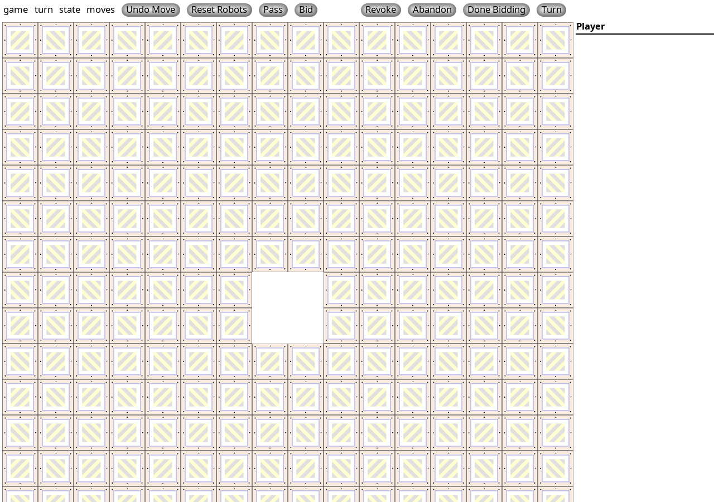

Why play
A strong board-game-night slot that is quick, brainy, and multiplayer without being a war game.
A multiplayer Ricochet Robots table: solve robot movement puzzles on a shared board, bid a move count, then prove the route.
These notes are based on actual offline play checks. Opening the page is not enough; we test a real first action before calling it ready.
A strong board-game-night slot that is quick, brainy, and multiplayer without being a war game.
A local rrserve instance accepted the client and displayed the active board offline.
Best for puzzle-solvers who enjoy racing to find the shortest route.
Installers are stored on the arcade's local download shelf. Seed packages: ricochet.
83 cached files, 62.8 MB total, with file details and checksums.
Open downloadsOn matching Debian 12 clients, copy the version folder and run sudo apt install ./*.deb. Non-Linux clients need per-game official packages when available.
Open the saved official website, manual, or setup note.
Open guideshttp://rr.nickle.org
Open official page
PASS
PASS: offline test mode, rrserve ran locally and the Ricochet client joined a named game and reached an active puzzle board.
Detailed test notes are kept for operators.
A short offline orientation for first play. Use the docs mirror for deeper rules/manuals where available.
Run the packaged server on the LAN Arcade host or a local machine.
Clients connect to the server and join or create the same game name.
Find the shortest robot path, bid your move count, then execute it.
The server is lightweight, but keep it in the normal on-demand service pattern.
Playable entries must pass an offline play check that reaches a meaningful game state.
Passed
rrserve + client
None during test
Two real LAN clients